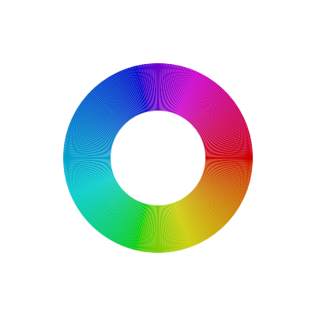 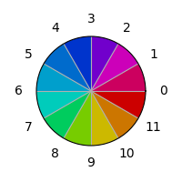

Human vision and color are a very complex topic, and much useful material has been written about them - I would recommend Bruce MacEvoy's color vision site and The Dimensions of Colour by David Briggs as both having fairly broad and well-written information. A brief simplified summary of some relevant information follows:
Given the structure of the musical tone space, it would be useful to have a set of 12 colours that are spaced relatively evenly. The concept of Hue is useful for this purpose as it represents a perceptually continuous cycle along the spectral colours and the line of purples on a chromaticity diagram. This section will explore how to produce an optimal set of colours with evenly distributed hues.
As a first attempt, let's map the circle of fifths onto the hue dimension of the HSV colour space, whilst keeping saturation and value fixed.
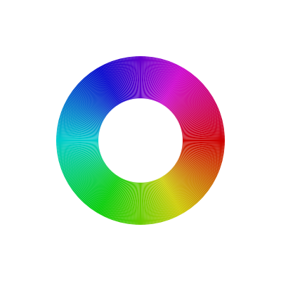 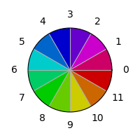Visually, these colors are not evenly spaced - the greens are not as spread out as the other colors and are harder to distinguish. This can be addressed by using the Lab color space to select colors with the same saturation and value, but with hue values chosen to optimize the distance in that space:
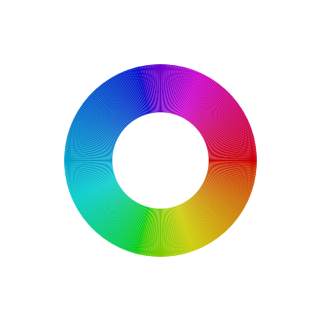
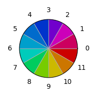
However, the Lab delta spaces still does not achieve anything uniform perceptual difference over large distances; using defined Delta-E functions on this space should improve the distribution as shown at right:
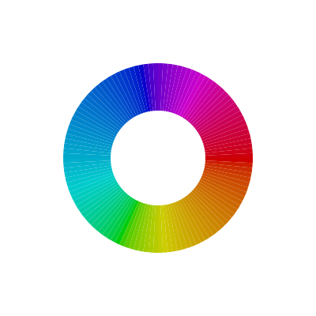
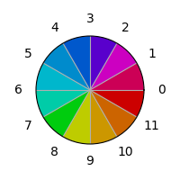
There are still notable bands of color that stand out in the left-most diagrams, which indicates that this isn't as smooth as we would like it to be...
This is an interesting alternative generating RGB colors directly using the sin2 function which generates a smoother, more flourescent set of colours (see Charlie Loyd and Jim Budgardner's independent development of this technique):
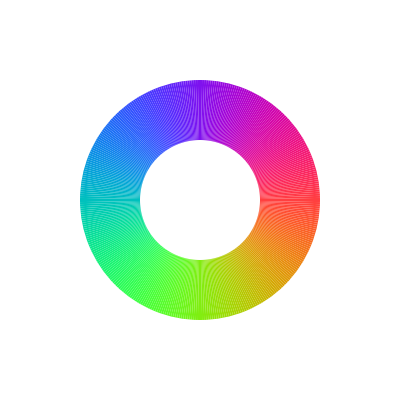
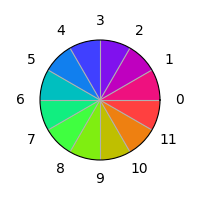
But none of these really look right to me. Perhaps it is because the hue mapping functions tend to see red green and blue as equidistant; but al alternative set as used in paint mixing is red yellow and blue. What if we used red, yellow and blue instead of red, green and blue as equidistant colors, and simply remapped the hues to that? In addition, we could map try and compress the purple range slightly...
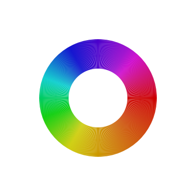 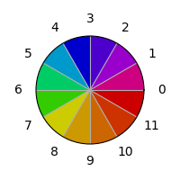Would it help to use the Lab delta functions to adjust this? The following diagram shows that it doesn't really...
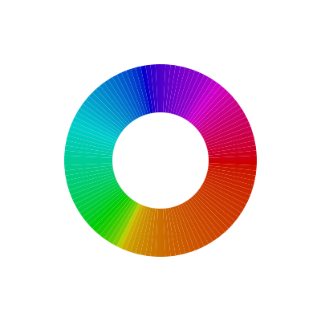 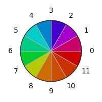
© David Fraser 2013